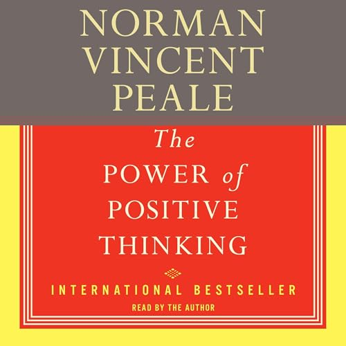

Library › Self-Improvement
The Power of Positive Thinking — Summary & Key Lessons

The 1952 classic that taught the world to believe in itself — faith, visualization, and the practiced habit of expecting the best.
📖 OPEN THE FULL INTERACTIVE BREAKDOWN →🌐 Read it in Hindi, Hinglish, Gujarati, Tamil & 22 more languages — free, with audio.
💡 The Big Idea
Peale's mid-century blockbuster — decades atop bestseller lists, tens of millions sold — built the template every later mindset book renovated: BELIEVE IN YOURSELF (an inferiority complex is a habit of thought, breakable by deliberate counter-practice); use FAITH as psychological technology (his prescriptions mix prayer, scripture, and visualization into what he frankly calls 'applied Christianity' — readers of any tradition can run the mechanics); EMPTY THE MIND of fear and resentment daily (mental hygiene as literally as dental), then REFILL it with peace-producing content; PICTURIZE outcomes (hold the success image until the subconscious accepts the assignment); break the WORRY habit by fasting from worry-words; expect the best (expectation organizing perception and effort toward its own fulfillment); and treat problems with his ten-point 'trouble' protocol. Dated in places, criticized by psychologists for its confidence, it endures for one reason: the practices, actually practiced, move people.
🧠 The 6 Key Lessons
Lesson 1: Believe in Yourself: Dismantling the Inferiority Habit
Chapter 1: Believe in Yourself
Peale's opening diagnosis: the inferiority complex — the settled sense of not-enough that sabotages before any contest begins — is not a fact about you but a HABIT OF THOUGHT, usually installed young and rehearsed for decades; and habits, however old, respond to counter-practice. His protocol: build a mental catalogue of your actual assets (the deflated systematically under-count — write the inventory), practice AFFIRMATION with content (not vague pep but specific, spoken claims — his originals are scriptural: 'I can do all things through Christ who strengtheneth me'; his secular readers substitute equivalents — the mechanism is repetition displacing the rehearsed inferiority), refuse the comparison trap (you're not required to be anyone else's size), and — the chapter's engine — act on the upgraded belief immediately: confidence follows evidence, and evidence follows action ('action is a great restorer and builder of confidence; inaction is not only the result, but the cause, of fear'). Ten times daily, he prescribes, repeat the claim; then take one act the old belief would have vetoed.
📖 Example: Peale's consulting-room cases (he ran what amounted to one of America's first mass counseling operations from his Manhattan church) supply the exhibits: the traveling salesman paralyzed before every call — assigned the asset inventory plus spoken… Read the full example →
⚡ Do this: Write the asset inventory tonight (skills, survived difficulties, people who count on you — minimum twenty entries). Choose your affirmation sentence and speak it aloud ten times daily for two weeks. Pair each day's repetitions with one action the inferiority habit would have blocked.
Lesson 2: The Peaceful Mind: Emptying and Refilling
Chapters 2–5: A Peaceful Mind / How to Have Constant Energy / Prayer Power
Peale's mental-hygiene doctrine, radical for 1952: the mind accumulates toxic content — fears, resentments, regrets, grievances — and requires DAILY EMPTYING as literally as any container ('empty your mind at least twice a day... fear and resentment poured out'); the emptying practices: verbal drainage (speak the fears out — to God in his frame, to paper or a confidant in any frame), forgiveness as detox (resentment, he insists decades before the research, taxes the body of its host), and imaginative flushing (picture the worries pouring out and peace flowing in). Then the REFILL — because an emptied mind refills automatically, the only question is with what: his prescription is deliberate intake of peace-producing content — scripture and prayer in his practice; memorized calming passages, nature scenes 'collected' and replayed, and curated inputs in the generalized version. The ENERGY chapters cash the hygiene out: fatigue, Peale argues from his case files, is more often emotional than physical — the energy consumed by carried resentment and rehearsed fear dwarfing the day's actual labor; the drained-and-refilled mind reporting, reliably, the 'constant energy' of his chapter title.
📖 Example: His scene-collection practice became the book's most borrowed technique: Peale describes deliberately 'photographing' peaceful scenes — a mountain lake at dusk, fog on a valley — into memory during travels, then REPLAYING them during tense Manhattan days as… Read the full example →
⚡ Do this: Install the twice-daily emptying: morning and evening, three minutes — name the fears and resentments specifically (spoken or written) and consciously release each. Build your scene collection this week: three vivid peaceful images deliberately memorized, deployed at the day's first tension. Audit your fatigue: what percentage is carried emotion? Forgive the biggest line-item — for the energy refund.
Lesson 3: Picturize, Prayerize, Actualize: The Imaging Formula
Chapters 6, 13: Expect the Best / The Formula
Peale's three-step formula — PRAYERIZE (daily conversational connection to the source, in his framing; daily articulated intention, in the generalized one), PICTURIZE (the load-bearing step: hold a clear, persistent mental image of the desired outcome — the successful meeting, the healed relationship, the position won — until the subconscious accepts it as assignment: 'hold it firmly in consciousness... the image becomes reality'), and ACTUALIZE (work toward the pictured outcome with the effort the picture organizes) — is the century's ur-visualization protocol, ancestor of every athlete's imagery routine and vision board since. The EXPECT-THE-BEST doctrine wraps it: expectation, he argues, is not prediction but ORGANIZATION — the mind set toward the best outcome notices doors, allies, and openings the doubt-set mind literally cannot see (and its inverse: 'expect the worst and you release from the mind the power to attract the worst'). His caveat, often skipped by critics: the formula's third step is WORK — the picturing without the actualizing is, in Peale's own words, merely daydreaming with ceremony.
📖 Example: The book's imaging cases: the mother picturing her estranged son's return — daily, specifically, at the emptied-mind hour — whose reconciliation letter arrived bearing (Peale delights in the detail) near-verbatim phrases from her pictured scene; the salesman… Read the full example →
⚡ Do this: Choose one outcome that matters this quarter. Run the formula daily: state the intention (spoken), hold the specific success image two minutes (same scene, same details — repetition is the deposit), then take one actualizing step within the hour. Expect the best out loud once daily — and log the doors that 'appear.'
Lesson 4: The Worry-Fast and the Trouble Protocol
Chapters 7, 11–12: Stop Fuming and Fretting / How to Break the Worry Habit
Peale treats WORRY as the era's great epidemic and prescribes a FAST: since worry is a habit sustained substantially by LANGUAGE, begin by fasting from worry-WORDS (a full day without speaking a single anxious prediction — then a week; the vocabulary, starved, takes the habit with it); drain the timeline (most worry is either yesterday's residue or tomorrow's fiction — his practice: live in 'day-tight compartments,' the phrase he shares with his era's other giant); shrink the worry to paper (the written worry, examined, is reliably smaller than the circulating one — and mostly never happens: his files' arithmetic anticipates every later study); and CROWD OUT what you can't fast away: the mind holds one dominant content at a time, so the worry-hour is scheduled against, filled deliberately with the refill content of chapter two. The TROUBLE protocol closes the kit — when actual difficulty (not imagined) arrives: pray it through (articulate it fully), believe a way exists (the belief keeps the search running), do the next right thing (action over analysis-spirals), and 'never mention the worst — never entertain it verbally': spoken catastrophes, in Peale's observed files, recruit their own believers, starting with the speaker.
📖 Example: The worry-fast's flagship case: the executive whose every sentence carried a hedge of doom ('this'll probably fall through...') — assigned the vocabulary fast and reporting the strange discovery that, unspoken, half his worries proved impossible to even… Read the full example →
⚡ Do this: Run the 24-hour worry-word fast tomorrow (recruit a spotter; every violation logged) — then extend to a week. Write tonight's worries on paper and grade each: past residue, future fiction, or actionable today? Action the third column; ceremonially discard the first two. Live one day-tight day: compartment doors shut at both ends.
Lesson 5: The Power of the Quiet Mind: Stillness Before Action
Part 2: The Practice
Peale's forgotten technique: before any important action, spend time in deliberate stillness — what he called 'the quiet hour' or even ten quiet minutes — letting the mind settle so the best thoughts can surface. The noisy mind makes reactive decisions; the quiet mind makes inspired ones. Peale recommended beginning each day by 'emptying the mind' and filling it with constructive thoughts before the world fills it with its own. This is not passive retreat; it is the calm before the strategic move. The most effective people he knew all had a practice of quiet — the wellspring from which their visible energy flowed.
📖 Example: Peale describes a businessman who, before every major decision, would sit quietly for fifteen minutes — and repeatedly found that the best course of action 'came to him' in that stillness, saving him from mistakes he would have made in haste. Read the full example →
⚡ Do this: Start tomorrow with 10 minutes of quiet before your phone: sit, breathe, and let your mind settle. Decide today's priority only after the stillness.
Lesson 6: Picturize Your Success: The Imaging Habit That Changes Outcomes
Part 3: The Application
Peale's 'picturize, prayerize, actualize' formula has a modern name — visualization — but his version adds a crucial step: picture the goal vividly AND repeatedly, then act as if it were already true. The mechanism is not magic: vividly imagining success changes your expectations, your posture, your willingness to act, and others' perception of you. Peale's evidence ranged from athletes to salespeople whose performance improved dramatically after systematically picturing their success. The key is consistency: a single visualization does nothing; daily picturing reshapes the inner landscape that drives behaviour.
📖 Example: Peale recounts a salesman who visualized himself calmly handling objections and closing the sale before every meeting — and whose closing rate rose steadily, not because the world changed, but because his confidence, tone and persistence changed. Read the full example →
⚡ Do this: Each morning for 7 days, spend 2 minutes vividly picturing one specific success — the meeting going well, the project finishing, the conversation landing — including how it feels.
✅ 5-Step Action Plan
- Write the twenty-asset inventory; speak the affirmation ten times daily.
- Empty the mind twice daily; collect and deploy three peace scenes.
- Run picturize-prayerize-actualize on one outcome each morning.
- Complete the worry-word fast; sort worries into residue, fiction, actionable.
- One inferiority-vetoed action per day — confidence follows the evidence.
💬 Best Quotes from The Power of Positive Thinking
- “Change your thoughts and you change your world.”
- “Believe in yourself! Have faith in your abilities!”
- “Action is a great restorer and builder of confidence. Inaction is not only the result, but the cause, of fear.”
Interactive version: mark lessons as read, listen in your language, share quote cards.